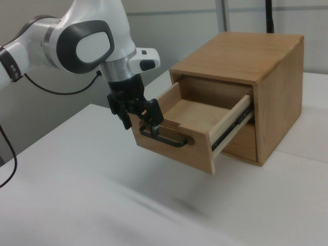

RoboMIND · franka_3rgb__slide_close_cabinet/0923_111834
Slide close cabinet

Visual review action_review.json
{
"prompt_protocol": "concise_action_v1",
"prompt_provenance": "visually_authored_from_video_and_initial_frame",
"dataset": "x-humanoid-robomind/RoboMIND",
"task": "slide_close_cabinet",
"episode_id": "0923_111834",
"source_video": "../../original/data/trajectory.hdf5",
"generation_camera": "camera_right",
"source_frame_count": 200,
"source_resolution": [
640,
480
],
"source_fps": null,
"source_fps_note": "FPS is not recorded in the source HDF5; 30 FPS is only a nominal playback rate, so no real-time durations are claimed.",
"selected_source_frame_start": 0,
"selected_source_frame_end_exclusive": 200,
"selected_frame_count": 200,
"selection_reason": "The episode is one continuous single task (close the open top drawer by pushing it shut, then release and retreat). There are no independent subtasks, so the complete 200-frame sequence is retained and no shortened branch or separate full-sequence prompt is written.",
"usable_prompt": "The robotic arm grips the handle of the open top drawer and pushes the drawer back into the wooden cabinet until it is closed, then releases the handle and lifts away. Keep the camera fixed; preserve robot geometry, physically valid joint motion, and normal gripper opening and closing.",
"full_sequence_prompt": "The robotic arm grips the handle of the open top drawer and pushes the drawer back into the wooden cabinet until it is closed, then releases the handle and lifts away. Keep the camera fixed; preserve robot geometry, physically valid joint motion, and normal gripper opening and closing.",
"selected_action_outcome": {
"status": "visually_completed",
"description": "The top drawer starts partly open (frame 0). The gripper sits at the drawer handle (frames 0-20), closes on it (telemetry gripper value rises 0 -> 0.99 over frames 0-30), and the arm pushes the drawer in toward the cabinet (visibly narrowing from about frame 40; nearly flush at about 86; closed by about 96-100). The gripper stays at the handle through about frame 130, then opens (telemetry value falls 0.99 -> 0 over frames 130-160) while the arm lifts up and to image left. At frames 160-199 the drawer remains closed and the open gripper hovers clear of the cabinet."
},
"source_overall_outcome": {
"status": "visually_completed",
"source_quality_label": null,
"description": "Same as the selected action: the top drawer ends closed and flush with the cabinet front; no object is manipulated other than the drawer. The lower drawer was closed throughout."
},
"anatomical_side_evidence": {
"visible_description": "Single Franka Emika Panda arm with a parallel-jaw gripper, base off-frame to image left; the arm enters from the left edge in camera_right view and reaches the cabinet on the right. Only one arm exists.",
"source_annotation": "original/task_prompt.txt: 'slide close wooden cabinet'.",
"visual_certainty": "Not a humanoid; left/right anatomy is not needed. The prompt refers to the single visible robotic arm."
},
"arm_roles": {
"active_visible_arm": "Single arm positions the gripper at the open top drawer handle, grips it, pushes the drawer closed, then releases and lifts away.",
"other_arm": "None."
},
"coordination": "Single arm acts alone; no second arm, hand transfer or human interaction.",
"chronology": [
{
"source_frames_inclusive": [
0,
28
],
"observation": "Arm above the table at left of the wooden two-drawer cabinet; top drawer partly open toward the camera. Gripper fingers are at/around the drawer handle; the gripper closes (telemetry 0 -> 0.99 over frames 0-30)."
},
{
"source_frames_inclusive": [
30,
70
],
"observation": "Gripper holds the handle (native frames 20, 60 viewed). Arm pushes the drawer in; the drawer visibly narrows from about frame 40 and the wrist/forearm swings toward the cabinet (blue light on the wrist link visible from about frame 24)."
},
{
"source_frames_inclusive": [
72,
100
],
"observation": "Drawer nearly flush by about frame 86 and closed by about frames 96-100 (native frames 86, 100 viewed); lower drawer remains closed."
},
{
"source_frames_inclusive": [
102,
130
],
"observation": "Gripper stays at the closed drawer handle with the drawer closed; arm begins easing back (telemetry joint 6 falls from about frame 110)."
},
{
"source_frames_inclusive": [
132,
160
],
"observation": "Gripper opens (telemetry 0.99 -> 0 over about frames 130-160) and arm lifts away from the handle up and toward image left (native frames 120, 136 viewed)."
},
{
"source_frames_inclusive": [
162,
199
],
"observation": "Open gripper hovers above the table to the left of the cabinet, clear of the closed drawer; drawer stays closed through the last frame (native frame 199 viewed)."
}
],
"uncertainties": [
"Whether the fingers grip the handle bar or hook around/behind it while pushing is not resolvable at this resolution; the prompt says 'grips the handle' because the gripper value rises while the fingers surround the handle and stays high during the push (inferred polarity: higher value = more closed).",
"Exact frame at which the drawer becomes fully flush is approximate (about 96-100).",
"FPS is not recorded in the source; frame indices are authoritative, not time."
],
"source_annotation_discrepancies": [
"No discrepancy: 'slide close wooden cabinet' matches the video (the top drawer is slid closed). The drawer is only partly open at the start, not fully extended."
],
"inspection_coverage": {
"entire_sequence_reviewed": true,
"sampled_decoded_frame_indices": [
0,
2,
4,
6,
8,
10,
12,
14,
16,
18,
20,
22,
24,
26,
28,
30,
32,
34,
36,
38,
40,
42,
44,
46,
48,
50,
52,
54,
56,
58,
60,
62,
64,
66,
68,
70,
72,
74,
76,
78,
80,
82,
84,
86,
88,
90,
92,
94,
96,
98,
100,
102,
104,
106,
108,
110,
112,
114,
116,
118,
120,
122,
124,
126,
128,
130,
132,
134,
136,
138,
140,
142,
144,
146,
148,
150,
152,
154,
156,
158,
160,
162,
164,
166,
168,
170,
172,
174,
176,
178,
180,
182,
184,
186,
188,
190,
192,
194,
196,
198
],
"sampling_method": "Every second decoded frame of camera_right (frames 0-198) in sequential temporary contact sheets covering the complete 200-frame source, plus native-resolution frames at the transitions.",
"native_resolution_frame_indices": [
0,
20,
60,
86,
100,
120,
136,
199
],
"conditioning_png_inspected_after_sequence": true,
"conditioning_png": "../first_frame.png",
"temporary_evidence_location": "/tmp/rm_review_franka_3rgb__slide_close_cabinet_0923_111834 (not a dataset artifact; removed)",
"ancillary_camera_videos_used": false,
"telemetry_used": "puppet/joint_position gripper column (index 7) sampled every 10 frames as supporting evidence only."
},
"generation_reference_validation": {
"source_frame_start": 0,
"source_frame_end_exclusive": 200,
"frame_count": 200,
"lossless_source_frame_correspondence_passed": true,
"original_source_hdf5_retained_unchanged": true
}
}